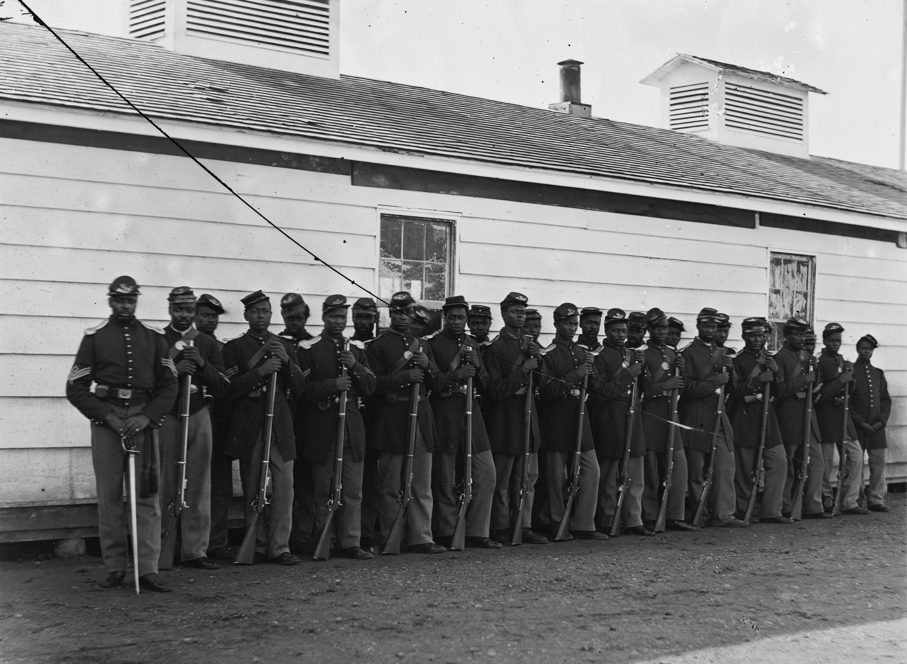

Directions: Work through the five stations in order. Each station holds one record from the year emancipation transformed the war, or from the answer it met. For each record, state what the war is for in the record and who is made to act. At the end, judge whether, by the end of 1863, emancipation had become the war's purpose or its instrument, and defend the judgment from the records.
Source: Abraham Lincoln, Emancipation Proclamation, January 1, 1863, as carried in the audited Primary Source Project bank record (Abraham Lincoln, 'Emancipation Proclamation,' 1863 (Avalon Project, Yale Law School).). The bank record is an excerpt; its cuts are marked by ellipses in brackets, as printed here.
[...] That on the first day of January, in the year of our Lord one thousand eight hundred and sixty-three, all persons held as slaves within any State or designated part of a State, the people whereof shall then be in rebellion against the United States, shall be then, thenceforward, and forever free; and the Executive Government of the United States, including the military and naval authority thereof, will recognize and maintain the freedom of such persons, and will do no act or acts to repress such persons, or any of them, in any efforts they may make for their actual freedom. [...] And I hereby enjoin upon the people so declared to be free to abstain from all violence, unless in necessary self-defence; and I recommend to them that, in all cases when allowed, they labor faithfully for reasonable wages. [...] And I further declare and make known, that such persons of suitable condition, will be received into the armed service of the United States to garrison forts, positions, stations, and other places, and to man vessels of all sorts in said service. [...] And upon this act, sincerely believed to be an act of justice, warranted by the Constitution, upon military necessity, I invoke the considerate judgment of mankind, and the gracious favor of Almighty God. [...]
The proclamation's own text names its limits. It applies to states and parts of states whose people were then in rebellion. It did not name Delaware, Maryland, Kentucky, or Missouri, the loyal slave states, and it exempted Tennessee and the parts of Louisiana and Virginia under Union occupation.
State what the war is for in this record. From the text, name who is declared free and by what description, and the two things the Executive Government promises to do about that freedom.
State who is made to act, and who is not reached. Name the people the proclamation invites into the armed service and the work it assigns them, and then state, from the limits printed with the record, which enslaved people the proclamation did not free.
Source: Frederick Douglass and other African American leaders, 'Men of Color, To Arms! To Arms!', 1863, as carried in the audited Primary Source Project bank record (Frederick Douglass and other African American leaders, 'Men of Color, To Arms! To Arms!,' 1863 (Gilder Lehrman Institute; original held by the Library Company of Philadelphia; image described).). The bank record presents the broadside as a description with its central appeal quoted word for word, and it is used here exactly as the bank presents it.
A printed recruiting broadside titled "Men of Color, To Arms! To Arms!" published in spring 1863, after the Emancipation Proclamation opened military service to Black men. Its large bold headline calls on free African Americans to enlist in the Union Army. Below the headline, columns of signatures show the broadside was endorsed by Black leaders, with Frederick Douglass's name third in the first column. Its central appeal declares: "If we value liberty, if we wish to be free in this land... If we would be regarded men, if we would forever silence the tongue of Calumny, of Prejudice and Hate, let us Rise Now and Fly to Arms."

State what the war is for in this record. From the quoted appeal, state what rising to arms is promised to silence, and what the men who rise are promised to be regarded as.
State who is made to act. The broadside was written by Black leaders, Douglass's name among the signatures, not issued by the government. Using the reading, state why its authors needed free Black men to act before any government could act for them, and what enlistment claimed beyond a wage.
Source: Abraham Lincoln, Gettysburg Address, November 19, 1863, as carried in the audited Primary Source Project bank record (Abraham Lincoln, 'Gettysburg Address,' 1863 (Avalon Project, Yale Law School; Bliss copy).). Printed in full.
Fourscore and seven years ago our fathers brought forth on this continent a new nation, conceived in liberty and dedicated to the proposition that all men are created equal. Now we are engaged in a great civil war, testing whether that nation or any nation so conceived and so dedicated can long endure. We are met on a great battlefield of that war. We have come to dedicate a portion of that field as a final resting-place for those who here gave their lives that that nation might live. It is altogether fitting and proper that we should do this. But in a larger sense, we cannot dedicate, we cannot consecrate, we cannot hallow this ground. The brave men, living and dead who struggled here have consecrated it far above our poor power to add or detract. The world will little note nor long remember what we say here, but it can never forget what they did here. It is for us the living rather to be dedicated here to the unfinished work which they who fought here have thus far so nobly advanced. It is rather for us to be here dedicated to the great task remaining before us--that from these honored dead we take increased devotion to that cause for which they gave the last full measure of devotion--that we here highly resolve that these dead shall not have died in vain, that this nation under God shall have a new birth of freedom, and that government of the people, by the people, for the people shall not perish from the earth.
Lincoln spoke for about two minutes at the dedication of the soldiers' cemetery at Gettysburg, where the battle of July 1 to 3, 1863, had cost the two armies together some fifty thousand casualties. The day after that battle ended, Vicksburg surrendered on the Mississippi and split the Confederacy in two.
State what the war is for in this record. From the text, state the proposition the nation was dedicated to at its founding, what the war is testing, and the new birth Lincoln resolves the nation shall have.
State who is made to act. Lincoln says the living cannot dedicate the ground. From the text, state the work he assigns the living instead, and whose example sets its measure.
Source: John Bell Robinson, Pictures of Slavery and Anti-Slavery, 1863, as carried in the audited Primary Source Project bank record (John Bell Robinson, 'Pictures of Slavery and Anti-Slavery,' 1863 (1863 first edition, Internet Archive).). Used as the bank presents it: Robinson was a Philadelphia writer defending slavery, in the year of emancipation, as an institution imposed by God. Quoted with cuts, marked by ellipses in brackets and disclosed here.
[...] I will answer, that what Noah said was merely prophetic, and that it was God who imposed the curse upon that unfortunate race. Therefore slavery is a divine institution, which I think I shall make clear to every sincere truth seeker. Some ask why God should have been so cruel to that race of mankind. If I had lived before the Supreme Being, and above him, and could have looked forward to the end of all things like he did, I could, perhaps, tell why he did it; as it is, I cannot. But no doubt it was done for the good of man. [...] It is believed by most commentators that Ham's son Canaan was with him when he discovered his old and respected father in such an unfortunate condition, and joined him in telling it to all they met; and, perhaps, that while Ham felt a deep vindictive contempt towards his old father, when he, as a dutiful son, should have pitied the good old patriarch, and hastened to have covered him from the public gaze, and cautioned his son Canaan not to tell it even to his best friend, that his father might not be disgraced before the public, and that future generations might not feel justified in drunkenness, because the old patriarch got drunk through ignorance, he run off and published it to his brethren, [...]
Robinson wrote for the American public, and for ministers in particular, arguing from the story of Noah and his son Ham that Black enslavement carried a divine sanction. He published in Philadelphia, in the North, in 1863, the year the proclamation took effect and Black regiments were raised.
State what the war is for in this record, as its author would answer. Robinson argues slavery is a divine institution. From the text, state who he says imposed it, the reason he says he cannot give for it, and the good he claims it was done for.
State who is made to act, and what this record proves about 1863. Robinson asks his readers to accept a scriptural defense rather than to do anything. Using the reading, state why a defense of slavery published in the North in the emancipation year belongs in this file, and what it shows that Stations 1 to 3 do not.
Source: Teaching summary. This station is a summary built from the public record of July 1863, written for this lesson. It is not a quotation, and no words in it are presented as any participant's own.
Teaching summary. The Enrollment Act of March 1863 made men between twenty and forty five liable to the federal draft, and a drafted man could hire a substitute or pay three hundred dollars, a working man's wages for the better part of a year. The draft lottery in New York City, begun on July 11, resumed on Monday, July 13. Crowds attacked the draft office and burned it, and the rioting spread for four days. The mobs turned on Black New Yorkers: Black men were beaten and lynched in the streets, and the Colored Orphan Asylum on Fifth Avenue was burned after its children were taken out to safety. Estimates of the dead usually run to about one hundred and twenty, most of them Black residents and rioters killed by police and soldiers. The mayor asked Washington for troops, and regiments were sent from the army that had fought at Gettysburg days before. Order was restored at cannon point, and the draft resumed in August under heavy guard and was completed.
State what the war is for in this record. The summary gives the rioters a grievance and a target that do not match. State the grievance the draft created, in dollars and wages, and the people the mobs attacked instead of the government that drafted them.
State who is made to act. Name the two forces that ended the riots and where some of the troops had been days earlier, and state what it means that the same army appears in this record and at Station 3.
Fill in the table from the five stations. Keep each entry to the record itself.
| Record | What the war is for in the record | Who is made to act |
|---|---|---|
| 1. The Proclamation | ||
| 2. Men of Color, To Arms! | ||
| 3. The Gettysburg Address | ||
| 4. Robinson, Pictures | ||
| 5. The draft riots summary |
Now judge the records against each other. Purpose and instrument are both in the file: a purpose is what a war is fought to achieve, an instrument is a means used to win it. A strong verdict says which the documents show emancipation to have been by the end of 1863, and answers the record that cuts hardest against the choice.
Write your verdict in a paragraph. State whether emancipation had become the war's purpose or its instrument by the end of 1863, defend the judgment from at least three stations, and answer the strongest record on the other side.
What the war is for. In this record the war is for the freedom of the people described: all persons held as slaves within any state or designated part of a state whose people were then in rebellion are declared then, thenceforward, and forever free. The Executive Government, including the military and naval authority, promises to recognize and maintain that freedom and to do no act to repress the freed people in any efforts they make for their actual freedom.
Who acts, and who is not reached. The proclamation receives persons of suitable condition into the armed service of the United States, to garrison forts, positions, and stations and to man vessels. It enjoins the freed people themselves to abstain from violence except in necessary self defence and recommends faithful labor for reasonable wages. It did not free the enslaved people of Delaware, Maryland, Kentucky, and Missouri, or of Tennessee and the exempted parts of Louisiana and Virginia, and students should name those limits from the record rather than from a summary of it.
What the war is for. In the quoted appeal, rising to arms will forever silence the tongue of calumny, of prejudice, and of hate, and the men who rise will be regarded as men. The war, in this record, is for liberty in the land and for the standing of Black Americans as men and citizens, proved in the only currency the broadside assumes its readers' opponents will accept.
Who acts. Free Black men are made to act, on the word of Black leaders, Douglass's signature third in the first column of the broadside as the bank record describes it. No government could confer the standing the broadside claims; the claim had to be enacted by the men themselves, in uniform, before it could be argued in politics. Beyond a wage, enlistment claimed manhood and citizenship, which is why the pay fight of 1863 and 1864, carried in the reading, was argued by Black soldiers as a question of equal standing and not only of dollars.
What the war is for. The nation was brought forth dedicated to the proposition that all men are created equal, and the war is testing whether that nation, or any nation so conceived and so dedicated, can long endure. Lincoln resolves that the dead shall not have died in vain, that the nation under God shall have a new birth of freedom, and that government of the people, by the people, for the people shall not perish from the earth.
Who acts. The living are made to act. They cannot dedicate, consecrate, or hallow the ground, because the brave men who struggled there have consecrated it above their power to add or detract. Their task is to be dedicated to the unfinished work the fighters have thus far so nobly advanced, and to take from the honored dead increased devotion to the cause for which those men gave the last full measure of devotion.
What the war is for, as its author would answer. Robinson would answer that the war is a rebellion against God's ordering. He says it was God who imposed the curse on that race, that slavery is therefore a divine institution, and that it was done, he is sure, for the good of man. He admits he cannot say why God did it: he would have had to have lived before the Supreme Being, and above him, to tell. Students should be able to state the argument fairly, including the admission, because the file asks them to judge slavery's defense as its defenders made it.
Who acts, and what it proves. Robinson asks his readers, ministers among them, to act only by believing: to accept the scriptural defense and withhold their support from emancipation. The record belongs in this file because it proves that in 1863 emancipation had an argued, published, northern opposition grounded in theology, not only a southern army in the field. Stations 1 to 3 show the war's new purpose being declared, recruited for, and rededicated. Station 4 shows the old institution still defended as God's will, in Philadelphia, in the same year, which any honest verdict on 1863 has to carry.
What the war is for, in this record. The grievance was the draft's price: the Enrollment Act let a drafted man pay three hundred dollars or hire a substitute, a sum near a working man's wages for the better part of a year, while men without money went. The mobs attacked not the Treasury or the draft law's authors but Black New Yorkers, who had no part in the law, lynching Black men and burning the Colored Orphan Asylum after its children were removed. The mismatch between the grievance and the target is the record's central fact.
Who acts. Police and federal troops ended the riots, the troops including regiments sent from the Army of the Potomac straight from the Gettysburg campaign, and the draft then resumed under guard. The same army that had stopped Lee in Pennsylvania in the month's first days restored order in New York in its middle days. The war for Union and freedom and the war resisted at home were one war, fought by the same regiments, and the summary's usual estimate of about one hundred and twenty dead should be stated as an estimate, as the summary states it.
Full credit verdicts define their terms, use at least three stations, and answer the strongest record on the other side. The strongest case for purpose: the proclamation commits the government to maintain a freedom it declares forever, the Address restates the nation's founding proposition as the war's stake and promises a new birth of freedom, and Black leaders and soldiers made freedom their own war aim in print and in the ranks. The strongest case for instrument: the proclamation is framed on its face as an act warranted by the Constitution upon military necessity, it frees only where rebellion gives the war power reach, it leaves four loyal slave states and the occupied districts untouched, and the draft riots show a northern public conscripted for a war many of them did not accept as freedom's. Robinson is the record both sides must handle: for the purpose case he shows emancipation had become enough of a national fact to need a theological answer in 1863; for the instrument case he shows the argument for slavery intact and publishable in the North at the year's end. Verdicts that declare the question settled by the proclamation's title, or that ignore its printed limits, earn partial credit.